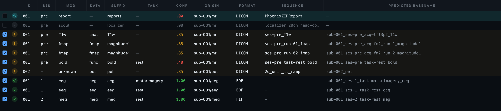
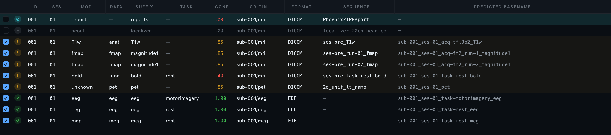
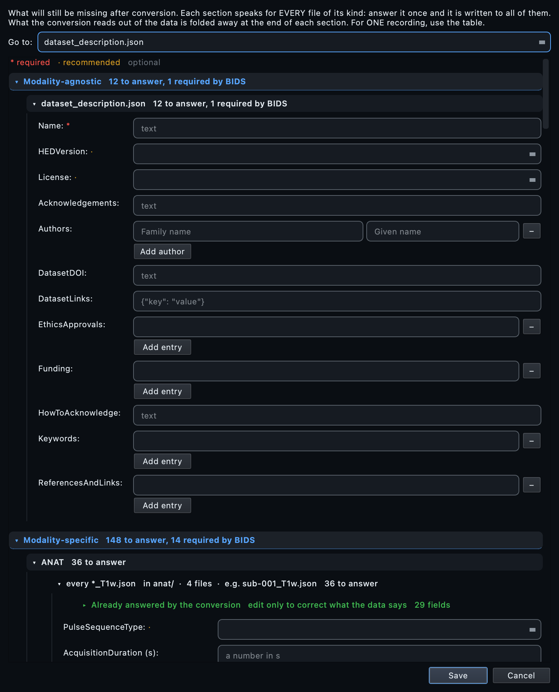
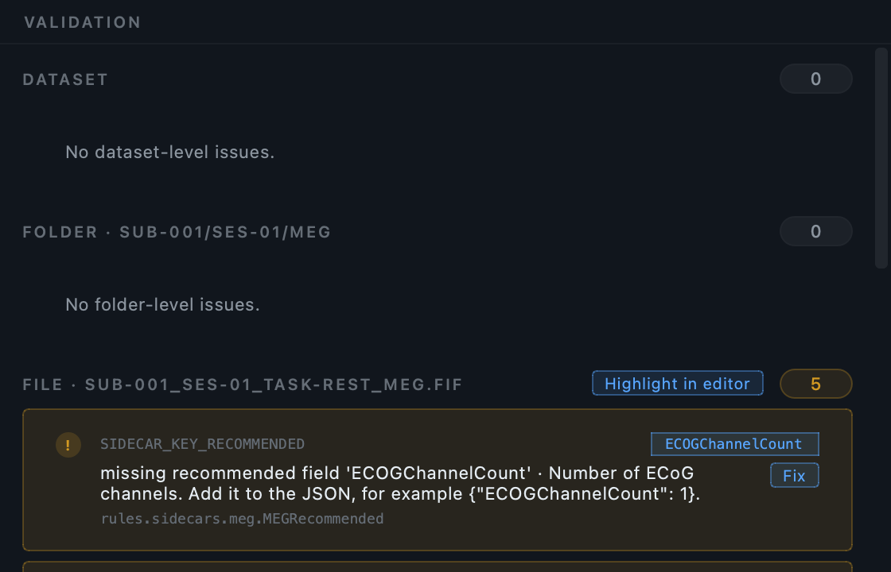
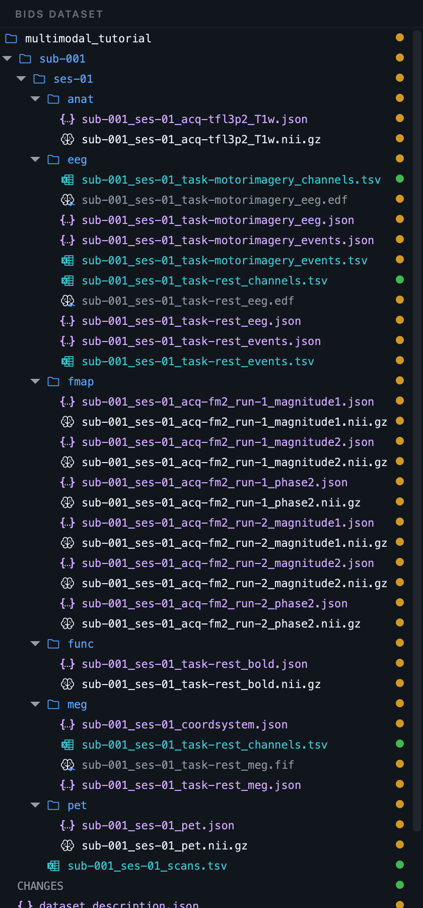

One visit, four modalities, one dataset.
A participant who had an MRI, a PET scan, an EEG session and an MEG session. Four file formats, three conversion engines, and four different opinions about who was scanned. This walkthrough takes the whole thing to a validated BIDS dataset in one pass, and the work that matters is not the conversion.
The GUI walkthrough explains each control once. This page covers what changes when several modalities are present at the same time, in the order you meet it.
The sample dataset.
One participant, four modalities
MRI as Siemens DICOM, PET as GE DICOM, EEG as two EDF recordings, MEG as one Elekta FIF file, plus a dose sheet and a participants sheet. 57 MB to download, about 110 MB unpacked.
Unzip it anywhere you like. You never point BIDS
Manager at the zip itself; you point it at the
raw/ folder inside, once, and it finds
everything below.
The four recordings come from four different real acquisitions, put into one participant folder so that a single scan produces a genuinely multimodal inventory. Nobody was scanned four ways for this. It behaves exactly like a real multimodal study at every step, including the part most people find hardest, which is that the four modalities disagree about who was scanned and when. Provenance and licences for each are in the download's own README.
Every file, and what to do with it.
One participant folder holding one folder per modality, which is how a great many labs actually store a visit.
| Folder | What is inside it | What it becomes |
|---|---|---|
mri/ |
One Siemens session: a T1w, one resting-state BOLD run, two
fieldmap series, a localizer and a
PhoenixZIPReport. |
Six rows. Four convert; the localizer and the report do not, and the scan works that out for itself. |
pet/ |
One FDG acquisition on a GE Advance, stored one slice per file. The same scan the PET tutorial uses. | One row. |
eeg/ |
Two EDF recordings, 64 channels at 160 Hz, about a minute each. The task is in the filename because EDF has nowhere else to put it. | Two rows, with the task already read off the names. |
meg/ |
One Elekta Neuromag recording, 325 channels at 1000 Hz, 30 seconds. | One row. |
dose_sheet.csv |
Nine PET field names with their values and units. | Nothing on its own. You read it while filling the form in Step 4. |
participants.csv |
One row: sex, age, handedness and group. | participants.tsv, written by the
metadata step. |
Create a project, then scan once.
On the Home tab choose Create and
give the dataset a folder and a name, for example
multimodal_tutorial. In the
Converter, press Scan and choose
raw/.
Once. Not once per modality. There is no modality setting to pick, no format to declare and no separate importer to run, because the scanner decides what each file is by opening it. That is the single most important thing this page has to show, and it is over in one click.
What the scan is doing while it walks the tree
-
DICOM is recognised by the
DICMmarker inside each file, then grouped into series by the identifiers in the headers. Both the MRI and the PET arrive this way, and nothing tells them apart in advance: the classifier reads them and works out that one is anatomical and functional MRI and the other is PET. - EDF and FIF are recognised by their own signatures and read through MNE, which is where the channel counts, the sampling rates and the measurement dates come from.
-
Nothing is recognised by its extension, so a
renamed file still converts and an
.imgthat is really DICOM is not skipped.
What you should see now: ten rows. Eight to convert, two the scan excluded on its own.
Read the table. Everything is in it.
Ten rows, four modalities, three file formats, six BIDS datatypes. This one table is the whole study, and every decision from here is an edit to a cell in it.

format column: DICOM, DICOM, EDF, FIF.
Then read down id and
ses, which is where the work is. The
teal row is the scanner report, excluded because it has no image
data at all; the dimmed row below it is the localizer, set aside
automatically.
What each column is telling you
| Column | What it says here |
|---|---|
status |
Green on the EEG and MEG rows, amber on the DICOM ones. The amber is not a problem with your data: it is the mixed-study notice, which says this scan contains more than one study. It does, and deliberately so. |
conf |
1.00 for EEG and MEG, because
MNE reports the channel types and nothing has to be guessed.
.85 for most DICOM, from
dcm2niix's own classification.
.40 on the BOLD run, where the
fallback classifier matched the protocol name rather than a
header field. Low confidence is an invitation to check the
sequence column, not a failure. |
origin |
sub-001/mri,
sub-001/pet,
sub-001/eeg,
sub-001/meg. On a real study with
several participants this is the column that tells you at a
glance where a surprising row came from. |
data |
Six different datatypes from one scan:
anat,
func,
fmap,
pet,
eeg,
meg. Each will be routed to the
engine that can convert it. |
id and ses |
They disagree. This is Step 3. |
The two rows the scan set aside
Neither is an error, and neither is hidden. The
PhoenixZIPReport is a Siemens scanner
report with no image pixels in it at all, so no converter can turn it
into a NIfTI; the row is marked, excluded, and carries the reason. The
localizer is a scout image, useful to the radiographer and not part of
the dataset. Both can be put back with a click if you disagree.
This matters more than it sounds on a multimodal run. A tool that silently skipped them would leave you unable to tell an excluded file from a file that failed to convert, at exactly the moment when several engines are running and any one of them could have gone wrong.
One participant, one visit, four opinions.
Look at the id and
ses columns in the figure above. One
person went through four machines on one day, and the scan came back
with this:
| Modality | Subject | Session | Because |
|---|---|---|---|
| MRI | 001 |
pre |
The patient identifier in the DICOM headers, and a session token the protocol names carried. |
| PET | 002 |
none | A different patient identifier in its DICOM headers, so a different subject. Correct behaviour on the evidence available. |
| EEG | 001 |
1 |
EDF carries no participant field, so the subject comes from the folder and the session from the recording date. |
| MEG | 001 |
2 |
The same, and a different date, so a different session number. |
Every one of those answers is defensible from the file it came from. Together they are wrong, and they are wrong in the way that costs the most: convert now and you get two subjects and three sessions, all valid BIDS, all passing a validator, and none of it matching your participant list.
No amount of reading files harder will fix this. The information that these four recordings belong to one person is not in any of them: it is in your head, or in a spreadsheet. A workflow that converts straight from disk has nowhere to put it, and one that converts each modality with a separate tool cannot even show you the disagreement.
Fixing it, which is two edits
-
Select every row. Press Bulk edit, set
idtosub-001, and apply. -
With the rows still selected, set
sesto01.
The predicted basenames rebuild as you type. Watch that column while you do it: it is the conversion telling you, before anything is written, exactly what it is about to write.

001 and 01,
and every predicted basename starts
sub-001_ses-01_. The entities that make
each file unique, acq,
run,
task, survived the edit: setting a
subject does not throw away everything else the scan worked out.
These edits are recorded into the project, not applied to disk. You can undo them, close the application and come back, or run the conversion a week later and get the same result. The scan is a version in the project's history; your edits are events on top of it.
One form, four modalities.
Press Dataset metadata. On a single-modality study this form is short. Here it has a section for every kind of file the scan found, and it is worth understanding how it is organised before you start filling it in, because the organisation is the answer to a real problem.

The shared region
The institution, the department, the authors, the participants
spreadsheet. You answer these once. They reach every sidecar whose
datatype declares them, which is decided by the standard rather than
by a list somebody typed out. Point the participants field at
participants.csv from the download.
The per-datatype sections
Below the shared region there is one section per kind of file, and each asks only what that kind of file needs:
- PET asks for the radiochemistry, because BIDS
requires it and no scanner records it. Fill this from
dose_sheet.csv. The PET tutorial goes through those nine fields one at a time. - EEG asks for the reference and the ground, which an EDF file has nowhere to store.
- MEG asks for the dewar position and the associated empty-room recording, and nothing that mne-bids can read out of the file itself.
- MRI asks for almost nothing, because dcm2niix already read almost everything from the DICOM headers.
That asymmetry is the honest picture of the four modalities, and it is why one form with sections beats four separate configuration files: you can see at a glance which modality is going to need work.
An answer in the EEG section reaches both EEG recordings. If one of them genuinely differs, a different reference on a repeat session, say, set it on that row in the properties panel instead. A per-row answer wins for that recording alone, and an inherited value is shown greyed with a tooltip naming where it came from.
One conversion, three engines.
Open the BIDS preview in the bottom panel and check the tree you are about to write. Then press Run conversion.
Behind that one button, three different programs run:
| Rows | Engine | Doing what |
|---|---|---|
| MRI and PET DICOM | dcm2niix |
DICOM series to NIfTI, with the sidecar it can derive from the headers. |
| EEG and MEG | mne-bids |
Recordings placed and named, with
channels.tsv,
events.tsv and a coordinate system
where the format has one. |
| PET, after the image | pet2bids |
The PET fields dcm2niix does not write, read from the same DICOM. |
You do not choose any of that, and there is no setting for it. Each row is routed by what it is.
Why one pass and not four
- Failure is contained. Conversion runs per subject into a staging folder and is committed only when the subject finishes. A backend that fails takes its own row down and leaves the rest of the dataset alone. On a four-modality run that matters: three engines are more ways for something to go wrong.
-
The cross-modality work happens once, at the end.
Fieldmaps get their
IntendedFor,scans.tsvis written per subject across every datatype, and the shared metadata reaches all of them. Converting each modality separately means doing this by hand afterwards, on files four different tools have already written. - Names are checked across the whole dataset, not within a modality. Two recordings that would land on the same filename are caught before anything is written, whichever engines would have produced them.
Then run the metadata step. On this dataset it writes
participants.tsv from your spreadsheet,
scans.tsv for the session, and the answers
you gave in Step 4 into every sidecar that takes them.
Validate the whole thing at once.
Switch to the Editor, open the dataset and press Validate dataset. On this sample, with the PET dose sheet filled in:
Nothing is malformed, misnamed, mistyped or in the wrong place, in any of the six datatypes.
Fields the standard recommends that this composite
never recorded. Most are marked
TODO so you can find them again.
A hundred and forty-nine warnings sounds like a lot until you notice what it is counting: every recommended field, on every one of six datatypes, on a dataset assembled from four unrelated acquisitions with no shared study documentation. A real study answers most of them once in the shared region of the metadata form.

rules.sidecars.meg.MEGRecommended, is
the part of the schema it comes from. Every one of the six
datatypes reads like this.
The validator is the same one for every modality, and it reads the same schema the metadata form was built from. That is why one number covers the whole dataset rather than four reports you have to compare by hand. Details of how it reports, and what the severity filter and deep checks do, are in the GUI walkthrough.
Look at what you made.
One subject, one session, six datatype folders. The Editor's tree is the quickest way to see that the four modalities really did land as one dataset rather than four that happen to share a folder.

anat,
eeg,
fmap,
func,
meg and
pet under a single
ses-01. Every dot is amber or green:
amber is a recommended field nobody stated, green is a file with
nothing to report. No red anywhere.
Every file opens in the same window
Click through them. The Editor routes by what the file is, so you do not change tools to change modality:
- The T1w, the BOLD and the PET open in the image viewer: one plane, three planes sharing a crosshair, or the GPU renderer. The BOLD gains a time-series graph because it is 4-D.
-
The EEG and the MEG open as a metadata card first,
then as an interactive time-series viewer when you press
Load signal, with filtering, an in-application power
spectrum and the events overlaid from the
events.tsvbeside them. - Every sidecar opens as a schema-aware form, with each field marked required, recommended or optional, and the standard's own description on hover.
-
Every table,
channels.tsv,events.tsv,participants.tsv,scans.tsv, opens as an editable spreadsheet.
Worth opening in this dataset:
sub-001_ses-01_scans.tsv, which lists every
image in the session with its acquisition time regardless of which
engine wrote it, and the MEG
channels.tsv, which is where you would
retype an auxiliary channel that the amplifier recorded as if it were
brain data.
From the command line.
The same engine, and notably the same single scan and single conversion. There is no per-modality command here either.
# 1. Create the dataset and its project. bidsmgr-create ~/bids/multimodal_tutorial --name "Multimodal tutorial" # 2. One scan for all four modalities. Ten rows. bidsmgr-scan ~/BIDS_Manager_multimodal_sample/raw \ --project ~/bids/multimodal_tutorial --probe-convert # 3. Reconcile subject and session in the inventory, then convert. # Three engines run; you do not name any of them. bidsmgr-convert --project ~/bids/multimodal_tutorial \ --raw-root ~/BIDS_Manager_multimodal_sample/raw # 4. Metadata: participants.tsv, scans.tsv, and your answers. bidsmgr-metadata --project ~/bids/multimodal_tutorial --fill-todos \ --participants ~/BIDS_Manager_multimodal_sample/participants.csv # 5. Validate everything at once. bidsmgr-validate ~/bids/multimodal_tutorial
Step 3's reconciliation is an edit to the inventory TSV between the
scan and the conversion: set BIDS_name and
session on every row and the names rebuild
from the entities. The PET answers live under
sequence_templates["pet/pet"] in the
.recording_meta.json beside the inventory,
keyed by their BIDS names. Every flag is documented in the
CLI reference.
What usually goes wrong in a multimodal run.
| What you see | What it means |
|---|---|
| More subjects than people | Expected before Step 3. Each modality answered from what it
could see. Set the id column and
they merge. |
| Sessions that do not line up | Same cause. MRI takes a session from the protocol or the study date, EEG and MEG from the measurement date. One visit should be one session; set it. |
| A red predicted basename | Two rows want the same filename. Give one of them a
run, an
acq or a distinct
task. Conversion refuses until it
is resolved, which is the point. |
| An amber status on every DICOM row | The mixed-study notice, not a defect. This tree really does contain two studies. It is telling you so in case you did not intend it. |
| One modality missing entirely after the scan | Check origin: you probably
pointed at a folder one level too deep. Point at
raw/. |
| A modality converted and the others did not | Conversion is per subject into staging and committed on success, so read the log for the engine that failed. The rest of the dataset is intact. |
| PET errors after everything else is clean | The dose sheet is not filled in. PET requires fields no scanner records; see the PET tutorial. |
Per-modality detail
Each modality has its own full tutorial, with its own sample dataset, the specific quirks, real numbers from a complete run, and what typically needs attention: MRI, MRI advanced, PET, EEG, MEG.